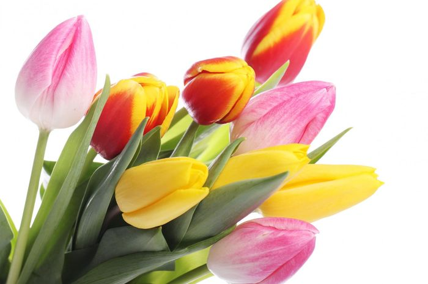

Bunga Tulip

Bunga Tulip: Elegansi Musim Semi dari Belanda
Bunga tulip adalah salah satu bunga paling terkenal di dunia yang identik dengan keindahan dan kesederhanaan. Bunga ini berasal dari Asia Tengah, namun paling populer sebagai ikon nasional Belanda, tempat di mana bunga tulip dibudidayakan secara luas dan menjadi daya tarik wisata internasional.
Fakta Singkat Sakura
- Nama Ilmiah : Tulipa spp.
- Famili : Liliaceae (keluarga lili)
- Asal : Asia Tengah (kawasan Pegunungan Tien Shan)
- Masa Mekar : Musim semi (sekitar Maret–Mei)
- Tinggi Tanaman : 20–70 cm
- Warna : Merah, kuning, ungu, putih, oranye, bahkan hitam
Ciri-Ciri Bunga Tulip
- Bunga : Seperti cawan atau lonceng yang terbalik, dengan 6 kelopak
- Batang : Tunggal, tegak, dan tidak bercabang
- Umbi :Tulip tumbuh dari umbi (bulb) di dalam tanah
- Daun : Memanjang, berwarna hijau kebiruan
Asal Usul dan Persebaran
- Awalnya tumbuh liar di Asia Tengah (termasuk Kazakhstan, Iran, dan Afghanistan)
- Dibawa ke Turki dan menjadi bunga kesukaan di era Kesultanan Utsmaniyah
- Masuk ke Belanda pada abad ke-16 dan menjadi sangat populer, bahkan sempat menyebabkan "Tulip Mania" gelembung ekonomi pertama di dunia
Tulip dan Belanda
Belanda dikenal sebagai “Negeri Tulip” karena:
- Produksi tulip terbesar di dunia
- Rumah bagi Kebun Keukenhof, taman bunga terbesar di dunia
- Tulip menjadi salah satu ekspor utama Belanda ke berbagai negara
Jenis-Jenis Tulip Populer
- Single Early(Mekar awal, bentuk klasik)
- Double Early(Lebih banyak kelopak, tampak seperti peony mini)
- Parrot Tulip(Kelopak bergelombang dan warna mencolok)
- Fringed Tulip(Tepi kelopak bergerigi)
- Rembrandt Tulip(Bercorak belang ala lukisan kuno)
Makna Simbolis Bunga Tulip
- Cinta sejati dan romantisme
- Kehangatan musim semi
- Pengampunan dan pengharapan
Festival Tulip
Beberapa festival tulip terkenal dunia:
- Keukenhof Tulip Festival (Belanda)
- Canadian Tulip Festival (Ottawa, Kanada)
- Istanbul Tulip Festival (Turki)
- Skagit Valley Tulip Festival (Washington, AS)
Bunga tulip bukan hanya bunga indah bermekaran di musim semi, tetapi juga memiliki sejarah, nilai ekonomi, dan makna budaya yang kuat. Keanggunannya menjadikan tulip sebagai simbol keindahan yang elegan dan berkelas.